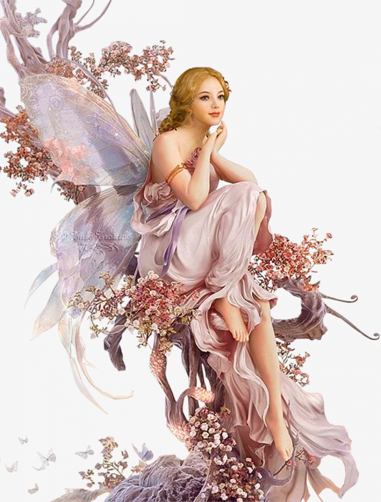
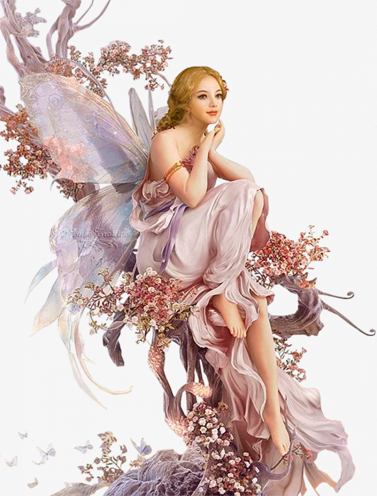

As usual, the SUN rose with the blessings of GOD,
The birds started singing and added their voices to the morning glory.
The cold breeze started sweeping around that blew my hair.
Yes, it was my schooling slot.
A warmth morning bell has rung at the SCHOOL,
Every student was rushing to the ground to address a prayer to the MOTHER EARTH.
'A MOMENT' Gentle shadow penetrated into my body,
I just peeped insensibly. Wow, it’s her.
The moment I gazed at her Beauty,
I merely clicked her mental image in my mind,
where I wondered if she was a missing species of UNSEEN PARADISE.
The SUN rays made her beauty even more radiant.
The wind frequently freshened her as if
the MOTHER EARTH was protecting her Daughter.
All of a sudden I had a fortune with the Glimpse of her.
It was so mighty that pierced into MY HEART,
where it made a porous and firmly embedded.
I could feel the beauty of LOVE in depth.
YES, It was my LOVE at first sight.
 
